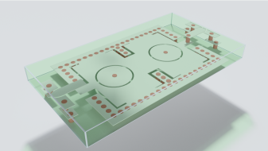
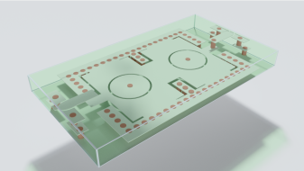

Acentury Inc | Software Developer
June 2024 - August 2024
Richmond Hill, Ontario, Canada
• Collaborated with the development team to automate BAW and SAW (RF semiconductor
resonators) simulations using Ansys technology
• Surpassed expectations in the fast pace and busy working environment
• Created API endpoint documentation in Azure for use in front end development and
testing
• Updated automated test cases for SynMatrix application TL calculations with JS and
Jest
• Gained valuable working experience, which I will apply towards my future career


 
